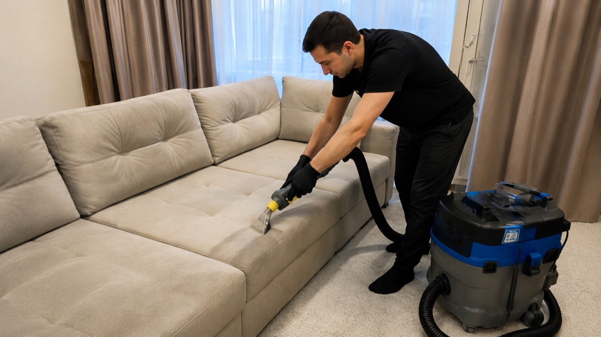
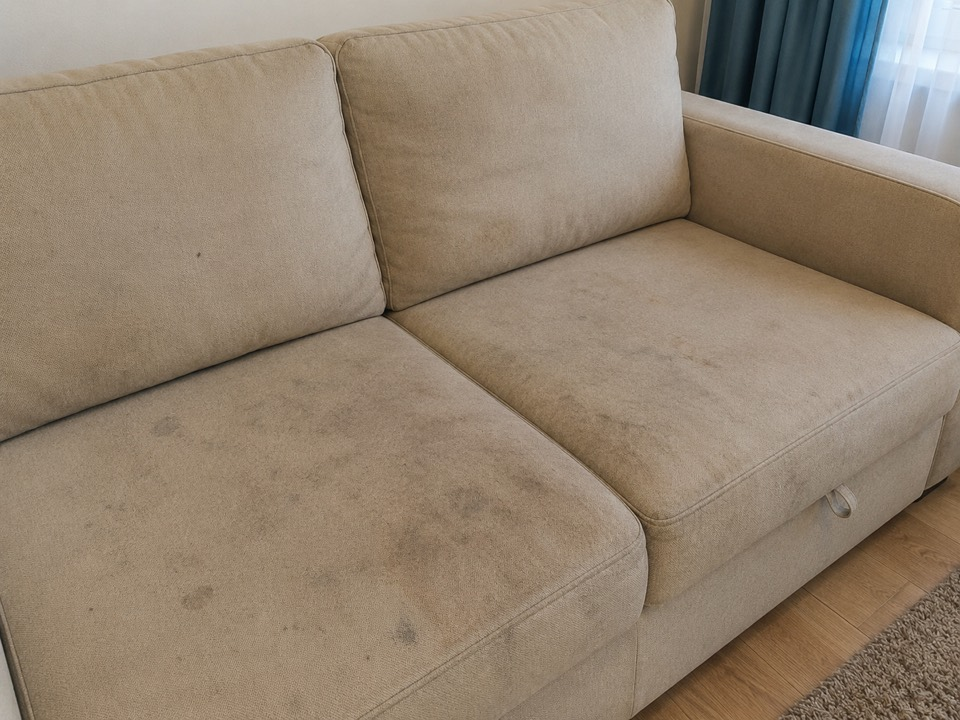
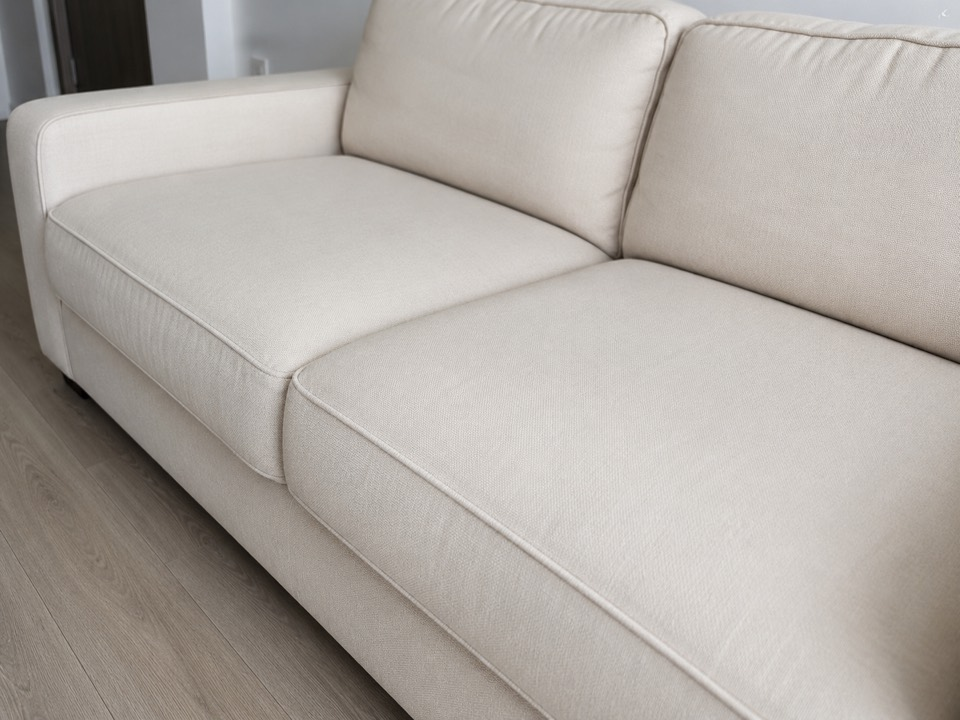

Заявка
Вы выбираете услугу и описываете диван.
Услуга
Подходит для диванов, кушеток, мягких секций и обивки, которую нужно освежить без перевозки изделия.
Описание
Услуга нужна, если обивка потемнела от эксплуатации, появились локальные пятна, запахи или хочется привести диван в порядок перед переездом, продажей или сезоном гостей.
Процесс
Вы выбираете услугу и описываете диван.
Уточняем размер, ткань и вид загрязнений.
Работаем оборудованием и подходящими средствами.
Объясняем, как проветривать и когда пользоваться мебелью.

Пример результата
Визуальный пример до и после. Реальный результат зависит от ткани, характера загрязнений и давности пятен.


FAQ
Да, структура услуги рассчитана на выезд по адресу.
После работы может оставаться влажность и лёгкий запах средства, который уходит при проветривании.
Да, эта опция есть в калькуляторе как предварительная надбавка.
Похожие услуги
Нужна оценка?